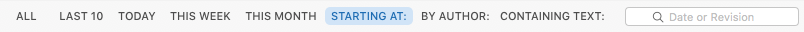

The history of individual files can quickly contain dozens or even hundreds of revisions. Cornerstone includes a set of pre-defined history filters to keep the information displayed in the history browser manageable and help you find the history information you’re looking for.
The filter bar at the top of the timeline view is used to select from a list of pre-defined filters. A field is displayed in the bar for filters that require additional input.

To filter the history:
The filters are as follows:
Removes the other filters to show all items.
Shows the last 10 log items for each item shown in the timeline.
Shows only the log items committed during the current calendar day.
Shows only the log items committed during the current calendar week.
Shows only the log items committed during the current calendar month.
Shows only the log items at or after the specified date or revision. See the subsequent section for more information on Date Formats.
Shows only the log items committed by the specified author.
Shows only the log items that contain the specified text in the log message.
The Starting at: filter accepts dates and revision numbers. Dates should be entered using the format configured in the Format tab of the International pane of your Mac’s System Preferences.